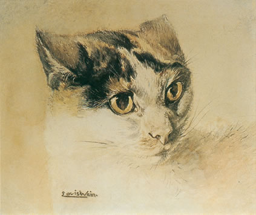
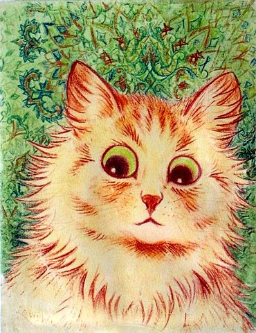

Born in 1860s London to William Matthew Wain, a textile and embroiderer by trade, and Julie Felicie Boiteux, Louis Wain would be the first of six children also being the only boy and the only one to marry (to Emily Richardson). When it comes to cats, possibly one of their biggest fans would have been Louis who drew and painted countless artworks of animals like birds and dogs, but had countless artworks of our feline friends made over his lifetime.
A lot of his work is colourful, funny, and very enjoyable to look at, making Wain's art mesmerising to look at, what also makes his art memorable is that a lot of his drawings feature cats in human situations like driving cars, in a courtroom, celebrating Christmas, and many more example - jeez, what's this guy's Fur Affinity account? The use of colours that are used within the art itself is fantastical, making it look almost proto-psychedelic in nature, and in fact, a lot of his cat artwork can sometimes look nothing like the animals at times, such as the art seen on the side.
It has been suggested that he may have had schizophrenia due to the way their artwork looks, changing so much over his life from rather simple drawings of anthropomorphic cats to abstract and strange arrays of colours. Wain's sisters thought this, so in 1924 they had him certified insane and placed into Springfield Mental Hospital in South London where he continued to produce artwork in the hospital, with his sisters selling off these pictures.

Personally, I do not subscribe to the schizophrenia theory. A lot of Wain's artwork is simply not dated, so it is hard to tell the full timeline of when something was made, so it could be more than possible that he made all of his proto-psychedelic art in one day as much as it is possible that he made it over the course of his later life. I follow the idea that Louis Wain had autism. In 2001, Dr Michael Fitzgerald showed their disagreement with this claim of schizophrenia, writing that Wain more likely had Asperger's syndrome (now ADS) - a neurodevelopmental disorder that is often characterized by significant difficulties in social interaction and nonverbal communication, as well as restricted and repetitive patterns of behaviour and interests (special interests).
It is very easy to confuse somebody with odd beliefs with schizophrenia and to think that these odd beliefs are formal thought disorder. He did not show deterioration in his skill as a painter and this remained with him towards the end of his life. McGennis is correct to point out this. There is absolutely no evidence that "his pictures show a visual representation of the progression of his schizophrenia".There is little doubt that he was a very eccentric if brilliant artist. He was also interested in mathematics, insects, bird skins, perceptual motion, science, and mechanical objects.
He was mostly a withdrawn isolated man from early life. He was bullied in school as many people with Asperger's syndrome are. He spoke with an unusual tone of voice. He had preservation of sameness. He was interested in music and was very obsessional.
He was very naive. He did go through a paranoid psychotic period just like Isaac Newton but the fundamental diagnosis was Asperger's syndrome.
While we won't be able to see the doctor notes for Wain until 2040-odd due to privacy protection, I have my doubt on if what was written will change my opinion all that much. While autism has existed as long as mankind has, autism being known of was not really a thing when Louis Wain was alive, so the doctor notes arn't going to namedrop the autism world.
Since he died in 1939, Wain's art and legacy have lived on in pop culture, being seen on the self-titled debut EP for Oingo Boingo, a 2021 Benedict Cumberbatch biopic, and @LouisWainBot on Twitter, currently failing to rebrand as X, will regally see hundreds of likes on reposts of his work, showing that even today, Louis Wain's art still lives on.
The images on this page is Public Domain due to age, the text is FOPL-ZERO, the code was taken from the LibreQuake project and is open-source.